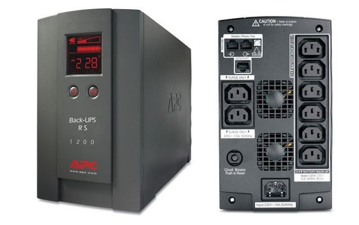
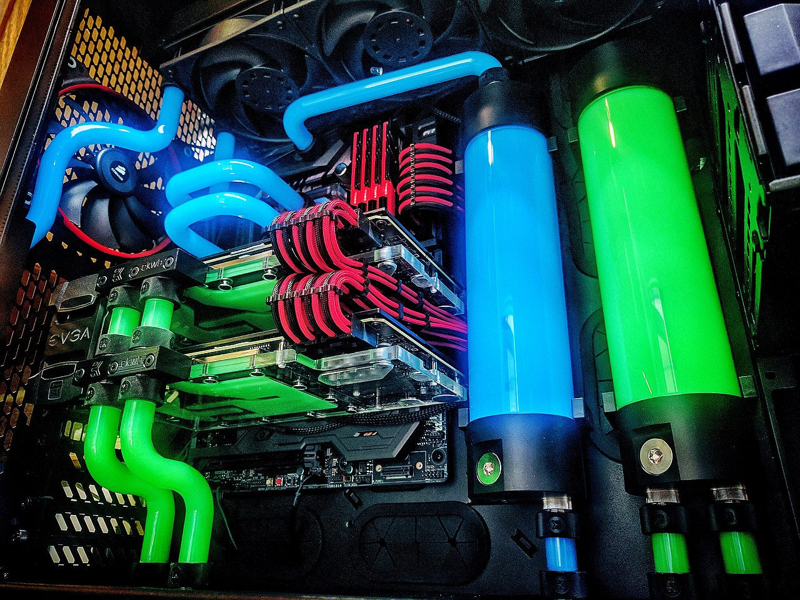
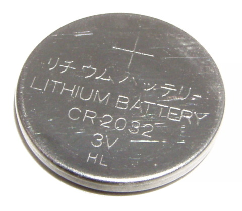
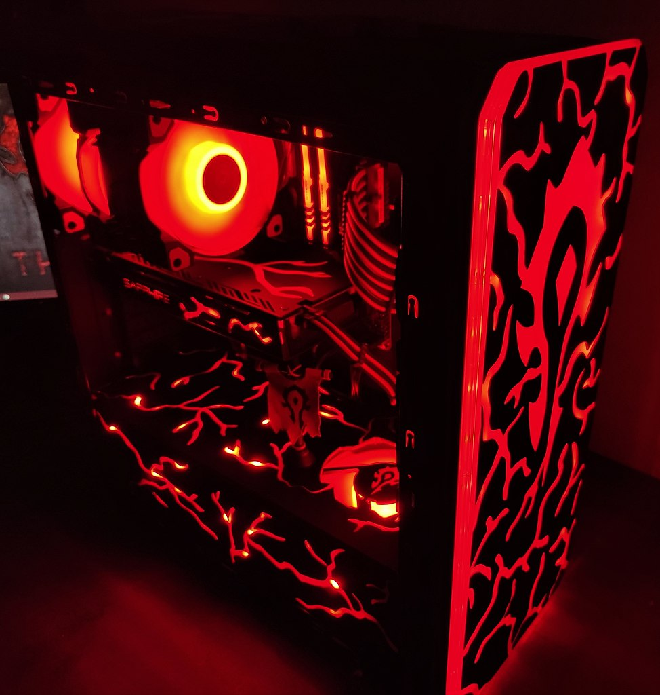

Elements auxiliars¶
- Alimentació
La "font d'alimentació <https://www.intel.es/content/www/es/es/gaming/resources/power-supply.html>` __ és el component que és responsable de l'alimentació amb baix tensió i corrent continu (5V i 12V) energia elèctrica a tots els components de l'ordinador.
L’alimentació elèctrica ha de tenir prou potència (watts) per poder alimentar tots els components, però també ha de tenir prou “actual <https://www.muycomputer.com/2018/10/14/guia-fuentee-de-alimentacion/>`__ (AMPS) per poder alimentar la targeta gràfica, que sol ser el component amb la demanda més alta de corrent.
Als telèfons mòbils i tauletes, l'alimentació sol ser un adaptador per a la sortida USB-C. Molts d’aquests adaptadors estan dissenyats per donar un poder creixent, per la qual cosa no és estrany trobar adaptadors de 18W a 80W o més, quan abans els carregadors USB gairebé no van arribar a 10W.
- Sistema d’alimentació ininterrompuda (SAI)
Un sistema d'alimentació ininterromput o Sai <https://es.wikipedia.org/wiki/system_de_alimentaci%C3%B3N_ININTERRUMPIDA> `__ (en anglès UPS) és un dispositiu amb una bateria recarregable a l'interior, cosa que pot proporcionar energia elèctrica a un ordinador o a un altre dispositiu durant una negre elèctrica.
El canvi de funcionament durant un apagament és tan ràpid que l’ordinador no surt i pot continuar funcionant uns minuts fins que es restableixi la potència normal o fins que l’ordinador s’extingeixi correctament.

Vista frontal i posterior d’una marca APC.¶
AnthDaniel, CC BY-SA 3.0, vía Wikimedia Commons.- Refrigeració a l’aire
El "refrigeració d'aire <https://es.wikipedia.org/wiki/refrigeraci%C3%B3n_por_aire_ (ordinadors)>` __ s'utilitza en els ordinadors més potents (per exemple, un ordinador portàtil o un PC), per extreure la calor generada pels seus circuits fora de la caixa. Normalment els aficionats s’utilitzen per sobre de la CPU, a la targeta gràfica i a la font d’alimentació, tot i que pot haver -hi més fans per evacuar la calor de la caixa.
Els aficionats solen ser els elements més forts d’un ordinador, és per això que en alguns ordinadors de baix rendiment, s’utilitzen sistemes de ventilació de convencions (sense fans) per evitar el soroll.
Un altre sistema que permet eliminar grans quantitats de calor amb poc soroll és el refredament de líquids, tot i que el seu preu és superior al refredament de l’aire.
- Refrigeració líquida
El refrigeració líquida És una tècnica de refrigeració que utilitza aigua o líquid com a medi refrigerant. És molt més eficaç que el refredament de l’aire i produeix menys soroll, tot i que té l’inconvenient de ser molt més car.

Interior d’un ordinador personal amb refrigeració líquida.¶
Llama roja, CC BY-SA 4.0, vía Wikimedia Commons.- Caixa
El Box Computer és l'estructura metàl·lica o plàstica que serveix per allotjar, sostenir i protegir els diferents components de l'ordinador.
Hi ha una multitud de formats d’efectiu <https://es.wikipedia.org/wiki/caja_de_computadora#tipos_de_caja>`__ de diverses mides i propòsits, a partir d’un tipus de tipus petit * descalç * a una caixa de torre gran, tipus * Rack * per a servidors o laptops de Laptops o tauletes.
- Botó
La bateria de la placa base és una bateria de tipus botó que s’encarrega d’alimentar el rellotge en temps real i la “memòria RAM-CMOS que emmagatzema les opcions del BIOS <https://es.wikipedia.org/wiki/ram-cmos>`__ mentre l’ordinador està desactivat. Normalment és un botó Model CR-2032.
Quan aquesta bateria es desgasta després de diversos anys d’ús, el rellotge deixa de mantenir l’hora actual i es restableix en el seu moment d’inici, també es perd la configuració de la BIOS. Tot això fa que l’ordinador no funcioni normalment o no funcioni en absolut.
La solució a aquest problema és senzilla perquè podeu trobar una bateria de recanvi en qualsevol comerç i la substitució és relativament fàcil de realitzar.

Pila de botons CR-2032, la més comuna a les plaques base.¶
Krzysztof Woźnica, Public Domain, vía Wikimedia Commons.- Rellotge en temps real
El `` RTC o rellotge en temps real <https://es.wikipedia.org/wiki/reloj_en_tiempo_real>`__ és un petit circuit integrat que actua com a rellotge mantenint la data i l'hora actual, fins i tot si l'ordinador està desactivat. Normalment s’acompanya d’una petita bateria de tipus de botó per donar menjar. El seu consum és molt petit, de manera que la bateria pot durar diversos anys en funcionament.
El rellotge en temps real s’utilitza per assignar els fitxers creats la data i l’hora actuals o per sincronitzar -se amb Internet Services
- Modding
El modding deriva de la paraula anglesa modificar (modificar) i és l'art o la tècnica de modificar l'estètica d'un ordinador personal que afegeix llums, imatges, parets transparents, etc.

Modificació del xassís amb alumini, acrílic i leds RGB.¶
Acuantico, CC BY-SA 4.0, vía Wikimedia Commons.
{kind=link}
{kind=link}
{kind=link}
{kind=link}